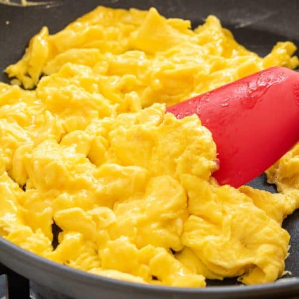

Scrambled Eggs

Ingredients
- 2 Eggs
- Bacon
- Onion
- Olive Oil
- Grated Cheese
- Salt, Pepper
Steps
- Fry bacon on low temp for a few mins
- While bacon is frying, dice onion
- Add onion in with the bacon
- In a bowl, beat the eggs, add salt and pepper
- Pour eggs into pan, stir constantly
- While egg still runny, add cheese, continue stirring
- Once cheese melted and egg solid consistency, kill heat and serve
- Let cool for few mins, optionally add oregano or some other herbs idk